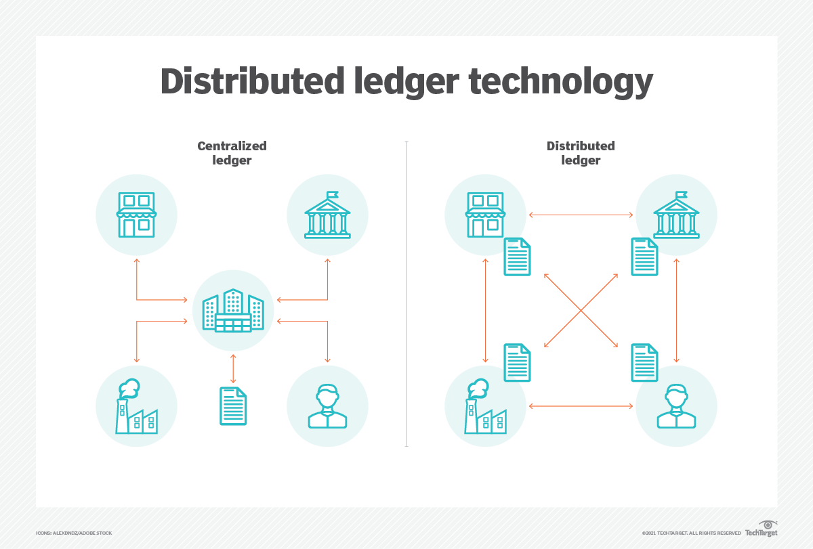
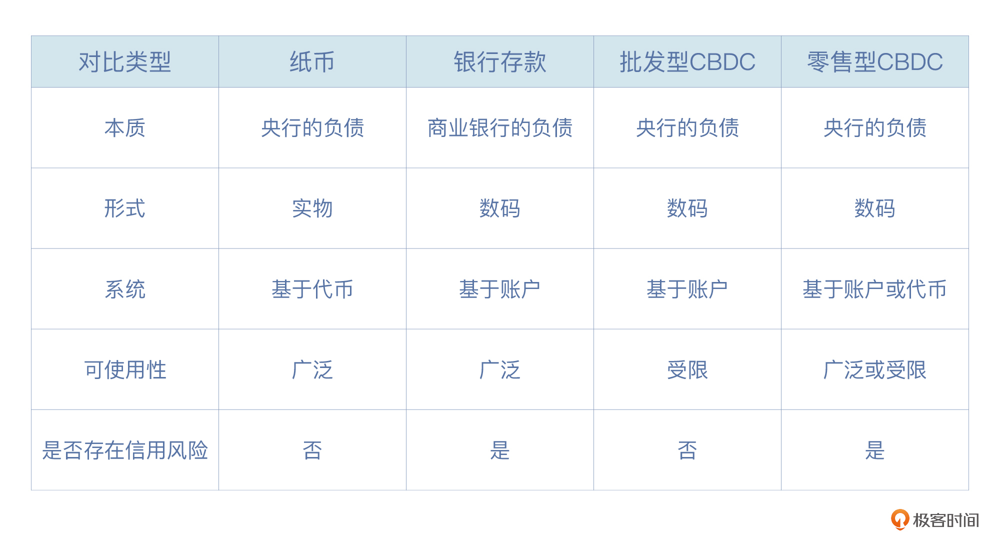

- 00 开篇词 Web 3.0：一场已经开启的互联网革命！.md.html
- 01 我们为什么需要Web 3.0？.md.html
- 02 公链：从计算分层开始.md.html
- 03 继续分层：身份和激励.md.html
- 04 NFT（一）：数据确权及其文化和商业价值的发现.md.html
- 05 NFT（二）：数据确权及其文化和商业价值的发现.md.html
- 06 边玩边赚能给游戏和电商带来新的商业模式吗？.md.html
- 07 Web 3.0社交和创作者经济.md.html
- 08 区块链：从底层重构金融.md.html
- 09 DeFi：“三无模式”开辟金融新蓝海.md.html
- 10 关于DAO的七个真相和两个趋势（一）.md.html
- 11 关于DAO的七个真相和两个趋势（二）.md.html
- 12 DeFi的空中楼阁能盖多高？.md.html
- 13 代码和法律，哪个更强？.md.html
- 14 Web 3.0正在形成的合力.md.html
- 特别放送 Yuga Labs：Web 3.0迪士尼的谛造之路.md.html
- 结束语 Web 3.0时代，你的创造和收获！.md.html
- 捐赠
08 区块链：从底层重构金融
你好，我是郭大治，很高兴与你在极客时间再次相遇。
金融是经济的核心和血液，几乎所有的商业活动都离不开金融的支持。它的主要作用在于资金融通，所以金融对于信息的获取和处理就非常依赖，从这个角度来说，支撑金融系统运行的技术手段，对于金融系统的运行规则、产品形态以及风险特征都会发挥重要的影响。
那么，在Web 3.0的背景下，去中心化技术底层对于金融体系的运行，会有哪些基础性影响呢？又将推动金融体系诞生哪些新的业态？在这个背景下，传统金融机构、科技公司的发展空间又会受哪些影响？
另外对于我们个人而言，金融一直是IT人员就业的一个重要方向，那么，在这场底层架构重塑推动行业变革的大潮中，我们又要如何定位自己？如何在行业的变迁之中，发现新的需求和提供对应的产出？这些问题，都需要以了解行业变革的背景为前提。
所以在接下来的时间里，我安排了三部分的内容，分别以区块链技术为例，针对去中心化底层架构对金融基础设施的影响，以及在传统金融和完全基于新的底层发展起来的DeFi中的应用，来给你进行详细解读它。
那么，今天这节课，我们就先来重点讨论下，区块链作为新型金融基础设施，对金融服务产生的三个方面的具体影响。准备好了吗？马上开始。
区块链对金融基础设施的影响
我们知道，区块链技术的发展源于比特币的诞生，而比特币为我们展示了一个去中心化计算网络如何为数据资产确权、定价和交易的典型案例。那么，结合比特币的基本特征以及区块链的发展情况，我认为，区块链作为新型金融基础设施，主要会对金融服务产生以下三个方面的影响。
自助式开户
首先，账户是金融服务的最基本单元，也是金融监管的重点领域。在传统金融体系，账户和个人是强绑定的，如果你要开设个人账户，你只能到银行现场，即使在金融科技如此发达的今天，这一点依然是金融机构坚守的底线。
但是，区块链采用非对称加密技术定义账户，任何人只要掌握私钥，就可以控制账户资产，服务全过程不需要任何机构参与，当然也可以实现自助开户。但是，人和账户既是绑定的，也是可以拆分的，所以，自助式开户是一把双刃剑，它可以降低用户的使用门槛，为我们带来便捷，但也能为一些黑产和金融犯罪活动提供便利。所以，我们需要谨慎对待。
清算即结算
清算和结算是金融体系中，资产交易流程里的两个非常基础的业务环节，其中，清算就是对账，因为在一段时间之内，金融机构不可能只发生你一笔交易，而是大量用户有买有卖，金融机构需要算一个总账；结算就是按照这个总账，进行资产交割。
在传统的金融体系中，资产交易的过程中需要中央证券存管（CSD）、中央对手方（Central Counterparty，CCP）、证券结算系统（Securities Settlement System，SSS）、支付系统（Payment System，PS）分别发挥证券登记、作市和清结算的功能。
比如，我们在证券交易所买卖股票的时候，往往需要遵守T+1或者T+2的规则，就是说你买了某只股票之后，必须要在1天或者2天之后才能卖出去，这个1天和2天就是用来清结算的时间。相对于每笔交易都逐笔进行交割来说，清结算是一种高效的处理方式，但是清结算的流程设计，又为交易效率的进一步提升设置了上限。
区块链账本本身就是CSD和SSS，自己可以发挥证券登记和结算的功能；区块链每出一次块，所有交易的清算和结算就全部完成了，如果区块链出块的速度足够快，清结算几乎就会随着交易的完成而同步完成，并不需要单独再花费时间。这样来说，我们基于区块链进行资产交易，就可以大幅提升资产的流动性。
条件式交易
区块链支持智能合约，基于分布式计算网络，一旦合约被部署，特定的交易就会按照合约中设定的条件自动执行，而不会被任何一方所终止。智能合约的这种特性比较适合多方参与的复杂交易，一旦触发智能合约的付款条件，交易将被无条件执行，交易也就不再会面临信用风险。
我们举几个例子。比如在保险业务中，可以通过智能合约设定赔偿条款，一旦赔偿条件触发，赔偿资金就可以自动转账至投保用户。
再比如，在资产证券化业务中，专业的中介机构（如评级公司），会对各种非标资产如贷款、租金或收费权等进行评级、分类以及归集各期现金流，每个环节都需要资产方和其他相关机构的相互配合，因此这样的传统模式会存在比较大的沟通成本和信用风险。
而通过智能合约实现资产证券化业务流程中需要的评级、担保和现金流归集等功能，可以减少人工操作失误以及造假的可能性，使资产证券化的整个业务流程得到有效管理。
总而言之，区块链作为金融系统新型基础设施，会对金融体系运行产生重大影响，从而导致Web 3.0产生了大量的、创新的金融服务，这些创新金融服务既包括以代币为对象形成的去中心化金融，即 DeFi（下节课我会给你具体解读它），也包括传统金融领域的创新。
接下来，我先通过法定数字货币和供应链金融两个案例，来给你介绍一下区块链在传统金融领域的应用。
法定数字货币CBDC：央行亲自下场，影响不同凡响
我们知道，现代金融体系中，各国央行承担着货币体系“守望者”的作用，自三百多年前全球第一家央行——英格兰银行成立以来，央行逐渐形成了基于法定存款准备金率、贴现率和公开市场操作“三大工具”的货币政策体系，这些工具的运用主要是对本国的通胀率负责。
但各国央行实施“三大工具”的前提，是该国的货币流通速度保持相对稳定，如果由于货币形态或者支付形式发生重大变化，而导致货币流通速度发生改变，并进一步对“三大工具”的传导机制产生影响的话，央行就需要主动采取措施确保政策执行的效果。
几年前，互联网支付的崛起对我国货币流通体系产生较大影响，央行及时采取措施要求第三方支付“去直联”，但仅仅通过“去直联”，显然无法实现对数字货币的监管覆盖。所以，发展央行直接主导的法定数字货币，就成为了新的政策选项。
如果一国央行能够在这一赛道建立全新的支付基础设施的话，毫无疑问，对于该货币体系的持续、稳健运行会产生重要意义。毕竟抢占了技术平台，就相当于获得了业务场景的控制权，从而对于业务规则的制定也就具有更大范围的选择权。
另外在2019年，Facebook等互联网公司还计划通过Libra等项目，在全球范围推广代币支付。虽然现在看Libra这个项目已经夭折了，但目前还在推进的类似的项目其实还有很多，从支付的角度来看，这些私人属性的货币和法定数字货币实际上是一种竞争的关系。所以，各国央行也在加速推出自己的法定数字货币方案，以应对这一挑战。
事实上，法定数字货币在货币属性和法律地位方面，与传统的纸币或电子货币是基本保持一致的，而且它还可以和传统纸币或电子支付进行打通。但在底层技术架构方面，它们都强调基于分布式账本（DLT，Distributed Ledger Technology）发行。
DLT是一种在网络成员之间共享、复制和同步数据库的技术，区块链属于DLT技术中的一个分支，DLT还包括 Hashgraph 和 Directed Acyclic Graphs（DAG）等更多的技术分支。

基于DLT技术构建的数字货币技术，在整体架构、发行协议、数据格式、签名机制、数字钱包等方面，和传统形式的电子货币有很明显差异，主要就体现在它具有更难篡改、渠道更广泛等特点。但它也有缺点，就是需要我们构建一套全新的生态系统，这对于我们的技术要求更高，而且体系运行维护的难度也会比较大。
不过，法定数字货币的推出，对各国的金融系统也产生了深远影响，特别是在金融系统的功能及金融机构职能分工方面，可能会有比较大的影响。
就比如说，零售型CBDC专门提供支付功能的数字货币，这类产品可以在降低小额支付成本、扩展支付范围、增强支付的可追溯性方面，发挥明显的作用；而批发型CBDC专门针对证券类资产交易提供新的解决方案，那么这类项目的实施就会对股票、外汇等有价证券的流动性，产生显著的积极影响。

此外，在零售型CBDC中，还存在“一元模式”和“二元模式”之分。“二元模式”下，一般是由中央银行将数字货币发行至商业银行业务库，商业银行与中央银行一起维护法定数字货币的发行、流通；而在“一元模式”下，央行会直接面对全社会提供法定数字货币的发行、流通、维护服务，而这里我们就几乎找不到商业银行存在的价值。
那么，商业银行会随之消失？还是发生业务转型？我们都不得而知，法定数字货币对于各国金融体系、货币体系的影响，值得我们持续关注。
供应链金融：多种数据技术配合服务实体经济
我们再来看第二个案例，供应链金融。
什么是供应链金融呢？基于供应链内部的商品流、信息流、资金流信息开展的金融业务，就叫做是供应链金融。
供应链金融是金融服务实体经济的一种重要形式，但在传统业务模式中，由于碎片化信息无法打通、缺乏风控手段等原因，供应链金融规模受到很大限制。
而区块链在供应链管理和供应链金融方面，可以通过解决信息孤岛、传递核心企业信用、丰富可信贸易场景、防范履约风险四个角度发挥重要作用。
- 在打破信息孤岛方面，作为分布式的账本技术，区块链的多个节点会共同维护一个账本，而且可以进行充分的信息共享，同时我们还可以基于隐私计算技术实现数据的隐私保护，为充分显示数据价值创造条件。
- 在传递核心企业信用方面，区块链发挥数据确权的作用，使得核心企业信用可以通过转让和拆分广泛流通。
- 在丰富贸易场景方面，区块链技术和物联网技术的结合，可以把供应链中更多的贸易相关数据上链，通过链上化的单证、合同、支付凭证等数据佐证贸易的真实性。
- 在防范履约风险方面，通过智能合约的运用确保交易双方或者多方按时履行付款义务，降低信用成本。
我们可以进一步结合供应链金融的各种形态，来分析下区块链的影响。比如，在应收账款质押融资中，由于资产本来就以数字形态存在，直接通过资产上链的方式即可对原有业务模式实现创新。
采用资产上链的模式可以将核心企业的应付账款转化为数字凭证，而且可以在各级供应商之间流通，既可用于支付，也可用于融资取现。这方面在国内和国际都已经有了比较成功的案例，比如中国宝武旗下的欧冶金融，推出以应收账款债券为载体的“通宝”。
再比如存货质押融资，它是指供应链企业以保存在仓库的原材料、半成品或产成品为抵押而获得借款的一种融资方式，但传统的仓储管理仍然停留在纸质单据阶段，记账、入库、出库、盘库全都依靠人工完成，货物一旦入库就像进了黑箱，关于货物的信息完全依赖仓储机构的信用，这就导致基于抵押物价值开展的抵押借贷业务，变成了基于仓储机构信用的信用借贷业务。
在2013年上海钢贸案、2014年青岛钢贸案，还有2020年的唐山钢贸案中，都是因为仓库管理不善造成“一货多抵”，涉案金额高达数百亿元。可以说“一货多抵”的操作，导致了金融机构视存货质押融资为雷场。
而在存货质押融资的模式下，我们首先要求“管好货”，也就是要做到高效、准确的库存盘点，让“黑洞仓库”变成“可信仓库”。然后，基于物联网技术，我们就可以利用移动感知视频、电子围栏、卫星定位、无线射频识别等技术，来对物流及库存商品实施远程监控。
以大宗商品为例，针对原油等液态物资，我们可以利用容器内液面起伏探测器，来追踪液态商品性状；针对铁矿石等难以过磅的干散货，通过3D激光扫描堆位体积，我们可以实时采集重量信息；针对糖、粮食等易变质商品，我们也能通过带质检的传感装置，监视仓库的温度、湿度。
由此可见，可信仓库的建设，帮我们解决了数据生成的关键问题，而数据的使用价值挖掘，就需要区块链发挥作用了。基于区块链建立系统，我们就可以连续记录存库数据，也就大大减少了人为篡改数据编造虚假业务量的情况，从而为交易真实性判断提供依据。
另外还有一个好处，商品交易所、担保机构、仓储机构、银行、仓单持有人共建一条联盟链，就可以基于账本准确获取仓单基本信息，跟踪仓单注册、转让、质押流转信息，从而也能有效规避仓单多重质押风险。
小结
这节课里，我们了解到了区块链作为金融基础设施对于金融体系运行的影响，主要体现在自助开户、清结算一体化，以及交易执行的可编程性上，区块链对于一般的金融业务都可通过这些特点发挥作用和影响。
当然，区块链也不是万能的，它的短板主要表现在数据的记录和获取方面，缺乏有效的数据支撑，可信账本就成为了无源之水、无根之木。此外，区块链在金融体系的应用也伴生着大量风险的出现，而且其跨国界的特性也不太便于各国政府进行金融监管，这也是目前各国政府对区块链在金融中的应用比较慎重的重要原因。
在下节课里，我还会针对DeFi进行重点介绍，你可以期待一下。
思考题
区块链对传统金融的影响还有哪些典型场景呢？欢迎给我留言，分享你的思考和见解，我们一起交流讨论。如果觉得有收获，也欢迎你把今天的内容分享给更多的朋友。
© 2019 - 2023 Liangliang Lee. Powered by gin and hexo-theme-book.